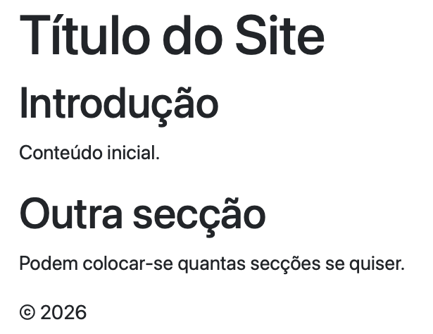
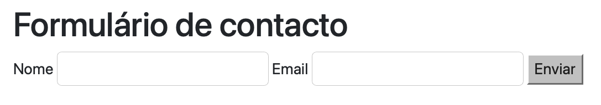
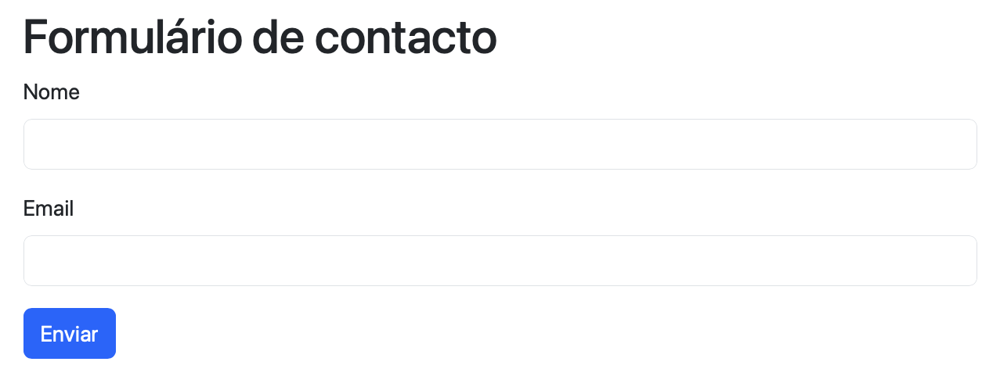
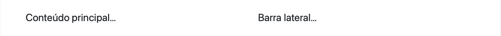

2 HTML, CSS and Bootstrap
2.2 HTML Structure
Several examples below are followed by a screenshot of the page as rendered in the browser. To keep every screenshot consistent with the code shown above it, the on-screen text in those specific examples (headings, menu labels, form fields) is left exactly as it appears in the original Portuguese screenshots, even in this English edition. Examples not tied to a screenshot use English text throughout.
A minimal HTML document always has the same shape: a document type declaration, followed by an html element, split into a head (metadata, not visible to the public, only to developers) and a body (the content visible to the public):
<!DOCTYPE html>
<html lang="pt">
<head>
<meta charset="UTF-8">
<title>A Minha Página</title>
</head>
<body>
<h1>Bem-vindo</h1>
<p>Primeira versão da página.</p>
</body>
</html>This code renders in the browser as shown in figure Figure 2.1:

body are visible.
Combining the structural tags already introduced, a page gains an organisation far clearer than a single block of undifferentiated divs. Each tag labels the kind of information it holds:
<!DOCTYPE html>
<html lang="pt">
<head>
<meta charset="UTF-8">
<meta name="viewport" content="width=device-width, initial-scale=1">
<title>Página de Exemplo</title>
</head>
<body>
<header>
<h1>Título do Site</h1>
<!-- other elements in the header -->
</header>
<nav><!-- menu here --></nav>
<main>
<section>
<h2>Introdução</h2>
<p>Conteúdo inicial.</p>
</section>
<section>
<h2>Outra secção</h2>
<p>Podem colocar-se quantas secções se quiser.</p>
</section>
</main>
<footer>© 2026</footer>
</body>
</html>This code renders in the browser as shown in figure Figure 2.2 — notice that, with no CSS at all, the structural tags carry no visual style of their own; the organisation into blocks exists, but is not yet visible:

header, the nav and the sections inside main organise the content, but are not visually distinguishable from one another.
Two elements are used with particular frequency in a Web application: a list of links inside nav, for navigation, and a form, to collect data from whoever uses the page.
<nav>
<ul>
<li><a href="#home">Início</a></li>
<li><a href="#sobre">Sobre</a></li>
<li><a href="#contacto">Contacto</a></li>
</ul>
</nav>This code renders in the browser as shown in figure Figure 2.3: with no CSS, a list of links still looks like a list, with bullet points and the browser’s default blue, underlined formatting for links:
<section>
<h2>Formulário de contacto</h2>
<form>
<label for="nome">Nome</label>
<input id="nome" name="nome" type="text">
<label for="email">Email</label>
<input id="email" name="email" type="email">
<button type="submit">Enviar</button>
</form>
</section>This code renders in the browser as shown in figure Figure 2.4: once again, with no CSS, the fields and the button appear with the browser’s default styling:

Note the for attribute of each label, which matches the id of the corresponding input: this is what visually links a label to its field, and what allows a screen reader to correctly announce the form. The input tag is one of the few tags that is not used with an opening and a closing pair: <input> </input> — it only has the form <input .../>, whose trailing part means that this tag “opens and closes” itself. Most of the time, that trailing /> is omitted and only > is written, as shown in the code examples above.
2.3 Applying Styles Directly
HTML describes the structure of the page; the presentation is the responsibility of CSS (Cascading Style Sheets). This section shows the three ways of attaching CSS to HTML, and then the two main selectors — class and identifier — used to target those rules at specific elements.
2.3.1 Three Ways of Applying CSS
CSS can be attached to HTML in three distinct ways.
Inline, directly in an element’s style attribute. For example, on an h1 element:
This code renders in the browser as shown in figure Figure 2.5:
Internal, in a <style> block inside the <head> of the html file it refers to:
<head>
<meta charset="UTF-8">
<style>
:root { --brand: #0d6efd; }
body { font-family: system-ui, sans-serif; line-height:1.5; }
nav ul { list-style:none; display:flex; gap:1rem; padding:0; }
nav a { text-decoration:none; padding:0.4rem 0.6rem; }
nav a:hover { background:var(--brand); }
</style>
</head>The rule :root { --brand: #0d6efd; } defines a CSS variable (a custom property), reused later with var(--brand): it is useful for keeping the same colour in several places in the style sheet without repeating it, and for being able to change it in a single place.
External, in a separate .css file, linked through the <link> tag placed in the header of the document where the styles should apply:
/* styles.css */
:root { --brand: #0d6efd; }
body { font-family: system-ui, sans-serif; line-height:1.5; }
nav ul { list-style:none; display:flex; gap:1rem; padding:0; }
nav a { text-decoration:none; padding:0.4rem 0.6rem; }
nav a:hover { background: var(--brand); }Applying these rules (through any of the three methods) to the navigation list shown earlier, the result is shown in figure Figure 2.6: the list’s bullet points disappear, the links stop being underlined, and they line up side by side:

list-style:none, display:flex, text-decoration:none).
Of the three, external CSS is, in general, the best practice: it clearly separates structure (HTML) from presentation (CSS), allows the same file to be reused across several pages, and keeps each document shorter and easier to read.
2.3.2 Classes, IDs and Specificity
Once the structure is defined in HTML, the CSS will hold a set of instructions telling the HTML elements how they should be “presented”. To apply styles to elements, CSS uses two main selectors: the class (class), for groups of elements, and the identifier (id), which must be unique within the page. A class can therefore label several elements on a page, which will all be formatted identically. Any number of elements can share the same class within the same document. An id selector, on the other hand, should only ever be applied to a single element on a page. The id is therefore said to be more specific than the class.
When writing CSS rules for a class, a dot is placed before the class name: .class_name, followed by the formatting instructions between { }, each separated by a semicolon. On the HTML side, the elements meant to be formatted by those rules carry the attribute class="class_name". For HTML elements with an id="id_name" attribute, formatting works the same way as for classes, except that instead of starting with ., the selector starts with # (#id_name).
A single HTML element can have several classes applied at once, separated by spaces. In that case, the element is formatted using the rules of ALL the applied classes:
Consider the following examples:
<h1 id="titulo" class="titulo">Título do Site</h1>
<nav class="menu">
<ul>
<li><a class="menu__link ativo" href="#home">Início</a></li>
<li><a class="menu__link" href="#sobre">Sobre</a></li>
<li><a class="menu__link" href="#contacto">Contacto</a></li>
</ul>
</nav>:root { --brand: #0d6efd; }
#titulo { color: var(--brand); } /* id: unique per page */
.menu { border-block: 1px solid #eee; padding: 0.75rem 0; }
.menu__link { text-decoration: none; padding: 0.4rem 0.6rem; }
.menu__link.ativo { font-weight: 600; }This code renders in the browser as shown in figure Figure 2.7: the heading is coloured by the #titulo rule, and the menu is styled by the .menu/.menu__link rules, with the ativo link shown in bold:

When the same HTML element is styled by two conflicting CSS rules — for instance, both setting its colour — the rule that wins is determined by its specificity. The list of specificities, from highest to lowest, is:
!important(best avoided; makes the CSS hard to maintain)- Inline style, i.e., inside each element (
style="...") - Identifier (
#id) - Class (
.class), attribute or pseudo-class - Element (
h1,p,a, …)
For example, what colour would the heading from the previous example end up with, given this CSS?
h1 { color: black; }
.titulo { color: blue; }
#titulo { color: green; } /* wins over the two rules above */The identifier (#titulo) is more specific than both the class and the element, so it wins: the heading turns green, as shown in figure Figure 2.8:
#titulo rule wins over the h1 and .titulo rules, for being more specific.
Or, if !important is applied:
h1 { color: black !important; } /* wins because it has higher specificity */
.titulo { color: blue; }
#titulo { color: green; }Now it is the element rule (h1) that wins, despite being the least specific of the three, because it carries !important: the heading turns black, as shown in figure Figure 2.9:
h1 rule wins over the .titulo and #titulo rules, despite being the least specific, because it carries !important.
2.4 Applying Styles Using Frameworks
2.4.1 Bootstrap
Writing and maintaining all of an application’s CSS from scratch is a considerable amount of work, especially when the result is expected to be responsive (adjusting to different screen sizes) and visually consistent. A CSS framework such as Bootstrap solves this problem, providing:
- Productivity and visual consistency, through ready-to-use utility classes
- Responsiveness already built in, through a grid and spacing classes
- Tested, accessible components (forms, navigation bars, buttons, among others)
Bootstrap can be included directly via CDN (Content Delivery Network), with no installation required: a style sheet in the <head>, and a JavaScript file (for the interactive components) before the closing </body>.
<head>
<link href="https://cdn.jsdelivr.net/npm/bootstrap@5.3.3/dist/css/bootstrap.min.css" rel="stylesheet">
</head>
<body>
<!-- page content -->
<script src="https://cdn.jsdelivr.net/npm/bootstrap@5.3.3/dist/js/bootstrap.bundle.min.js"></script>
</body>A navigation bar (navbar), with Bootstrap, is ready in a handful of lines, already responsive (it collapses into a menu on narrow screens):
<nav class="navbar navbar-expand-md bg-light border-bottom">
<div class="container">
<a class="navbar-brand" href="#">Meu Site</a>
<button class="navbar-toggler" type="button" data-bs-toggle="collapse" data-bs-target="#nav1">
<span class="navbar-toggler-icon"></span>
</button>
<div id="nav1" class="collapse navbar-collapse">
<ul class="navbar-nav ms-auto gap-2">
<li class="nav-item"><a class="nav-link" href="#home">Início</a></li>
<li class="nav-item"><a class="nav-link" href="#sobre">Sobre</a></li>
<li class="nav-item"><a class="nav-link" href="#contacto">Contacto</a></li>
</ul>
</div>
</div>
</nav>This code renders in the browser as shown in figure Figure 2.10:
A form gets the same visual treatment through the form-label and form-control classes:
<section class="container my-4">
<h2>Formulário de contacto</h2>
<form class="row g-3 col-lg-6">
<div class="col-12">
<label for="nome" class="form-label">Nome</label>
<input id="nome" name="nome" type="text" class="form-control">
</div>
<div class="col-12">
<label for="email" class="form-label">Email</label>
<input id="email" name="email" type="email" class="form-control">
</div>
<div class="col-12">
<button class="btn btn-primary" type="submit">Enviar</button>
</div>
</form>
</section>This code renders in the browser as shown in figure Figure 2.11: compare it with figure Figure 2.4, the same form without Bootstrap:

form-label, form-control, btn btn-primary).
The same grid system also organises the main content into columns. Bootstrap’s grid divides each row (row) into twelve columns; the class col-6 occupies six of those twelve, i.e., half the width:
<main class="container my-4">
<div class="row">
<div class="col-6">
<p>Conteúdo principal…</p>
</div>
<aside class="col-6">
<p>Barra lateral…</p>
</aside>
</div>
</main>This code renders in the browser as shown in figure Figure 2.12: the main content and the sidebar sit side by side, each occupying half the width, even though there is no visible border marking the columns — it is Bootstrap’s grid that reserves the space for each one:

2.4.2 Other Frameworks
Bootstrap is not the only CSS framework available, only the most beginner-friendly to start with, thanks to its approach based on ready-to-use components. It is worth knowing about, even without going into depth, a few popular alternatives:
- Tailwind CSS
-
A utility-first framework: instead of ready-made components such as
navbarorcard, it provides low-level classes, one per CSS property (for exampleflex,pt-4,text-center), which are combined directly in the HTML to build any custom look. - Bulma
- Based purely on CSS, with no JavaScript at all; syntax close to Bootstrap’s, but with no ready-made interactive components (menus, modals).
- Materialize
- Implements Google’s Material Design (shadows, elevation, vivid colours, animations); visually more opinionated than Bootstrap.
- Foundation
- Aimed at larger, more customised projects; more flexible than Bootstrap, but with a steeper learning curve.
The following table compares these frameworks by their approach and by ease of learning:
| Framework | Approach | Learning curve |
|---|---|---|
| Bootstrap | Ready-made components (navbar, card, btn) |
Low |
| Tailwind CSS | Utility classes, one per CSS property | Medium/high |
| Bulma | CSS components, no JavaScript | Low |
| Materialize | Components following Material Design | Medium |
| Foundation | Configurable, more flexible components | High |
2.5 Best Practices
- Prefer external CSS; avoid
!importantand excessive inline styles - Use a consistent naming convention for classes (for example, the BEM convention:
block__element--modifier) - Think about accessibility from the start: colour contrast, a
labelassociated with eachinput, a logical keyboard-navigation order - Always test the page’s responsiveness, at different screen widths
2.6 Exercise: the Static Pages of the “World Capitals” Application
Applying what was presented in the previous sections, this section builds the visual pages of the application used throughout the practical LABs (see Appendix D and onward): an API serving information about countries and their capitals. At this stage, the pages are entirely static, in HTML/CSS/Bootstrap, with no JavaScript at all: the data shown is fixed directly in the HTML, and the forms are not yet connected to any server. That is the work reserved for the LABs, which will simply add fetch() to this already-finished code.
All the pages share the same navigation bar:
<nav class="navbar navbar-expand-md bg-light border-bottom">
<div class="container">
<a class="navbar-brand" href="index.html">World Capitals</a>
<button class="navbar-toggler" type="button" data-bs-toggle="collapse" data-bs-target="#nav1">
<span class="navbar-toggler-icon"></span>
</button>
<div id="nav1" class="collapse navbar-collapse">
<ul class="navbar-nav ms-auto gap-2">
<li class="nav-item"><a class="nav-link" href="index.html">Países</a></li>
<li class="nav-item"><a class="nav-link" href="capital.html">Consultar Capital</a></li>
<li class="nav-item"><a class="nav-link" href="paises-editar.html">Gerir Países</a></li>
<li class="nav-item"><a class="nav-link" href="login.html">Entrar</a></li>
</ul>
</div>
</div>
</nav>This code renders in the browser as shown in figure Figure 2.13:

From this shared navbar, four pages are built:
- Country listing (
index.html): a Bootstrap table, with a few countries fixed in the HTML as examples. In the LABs, this table becomes dynamically populated from the result of/country. - Authentication (
login.html): a form with the fieldsuserandpass, with the same names expected by the/loginendpoint. - Capital lookup (
capital.html): a simple form, with a singlecountrycodefield. - Country management (
paises-editar.html): three separate forms, one per operation, all pointing to the same/countryEditendpoint, distinguished by the hiddenoperationfield (see the note on this design in Chapter 7).
These four pages, linked to one another by the shared navigation bar, already form a small, complete, working Web site, even with no server-side logic at all: it is possible to navigate between them, fill in the forms, and submit them. What is still missing is a server to answer those requests, and that is what the material in the following chapters will provide.
The complete, self-contained code for the four pages, ready to copy into an editor and open directly in the browser, is gathered in Appendix A.